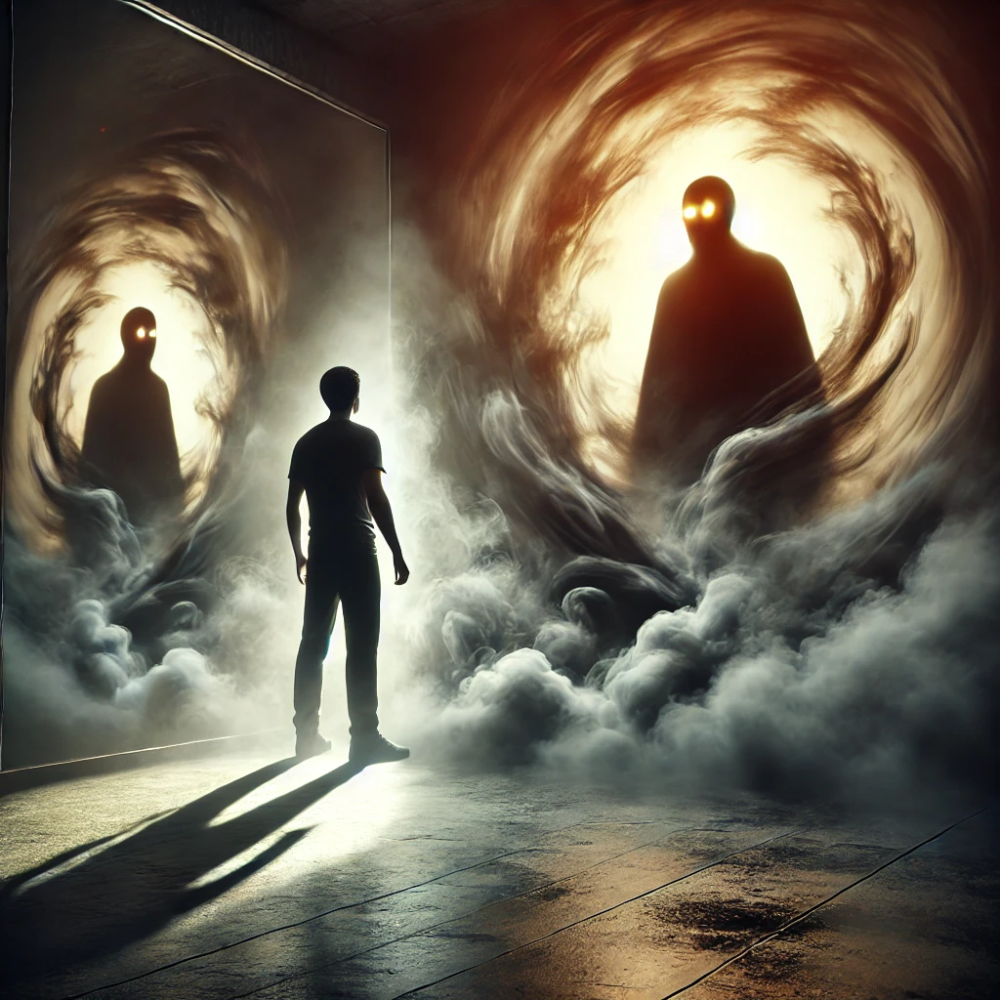

Steeling yourself, you stand tall and face the shifting shadows. They hiss and swirl, but you do not flinch. You take a deep breath and speak with a firm voice.
“Why are you here? What is your purpose in my path?”
The shadows pause, their forms flickering like smoke caught in the wind. One steps forward, its glowing eyes fixed on yours. “We are your creation,” it says. “Born of your fear, your guilt, and your denial. We exist because you have not yet faced what lies within.”
“Face us not as your enemy,” the shadow continues, “but as your mirror. Only by confronting us can you move forward.”
The air around you grows still, the weight of the moment pressing against your chest. You sense that the shadows are not here to harm you but to reveal a truth you’ve long avoided.

How will you respond?